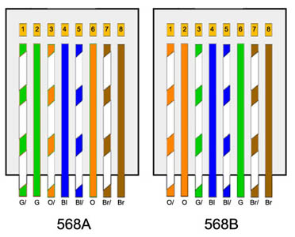
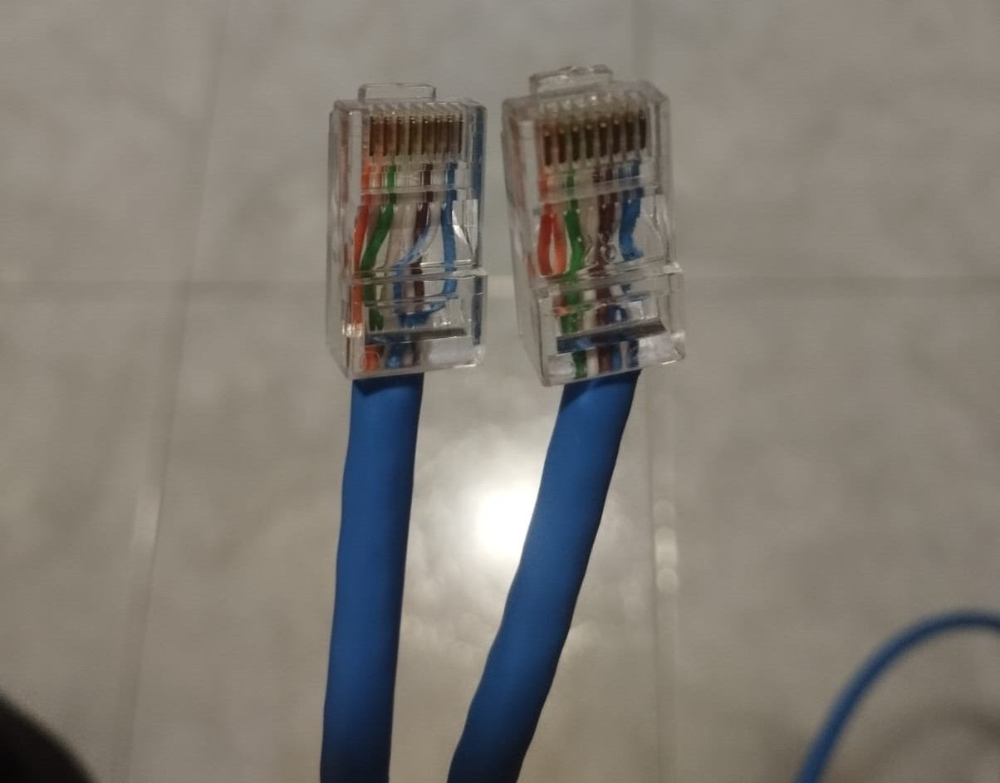
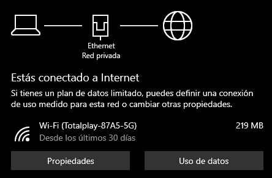
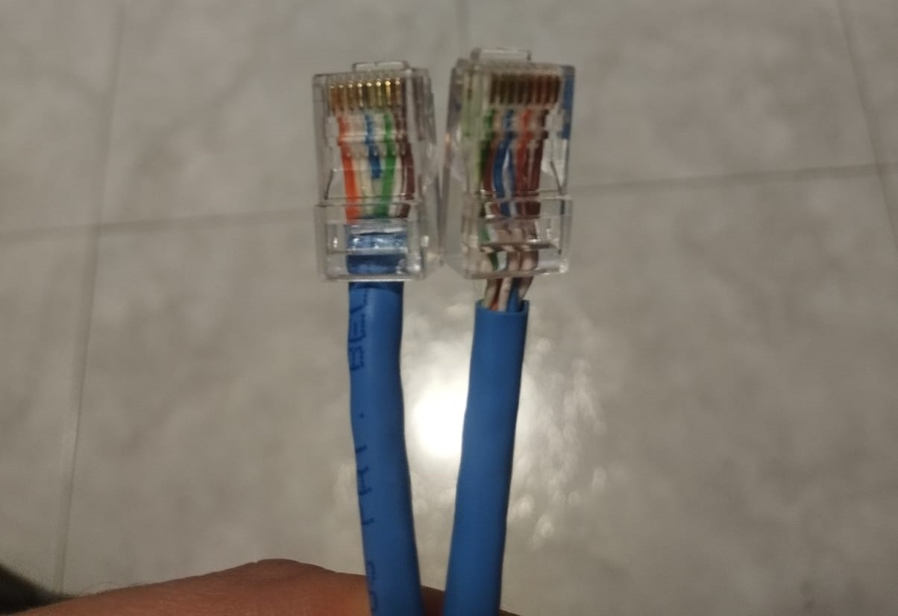
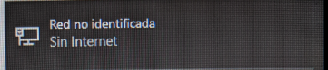
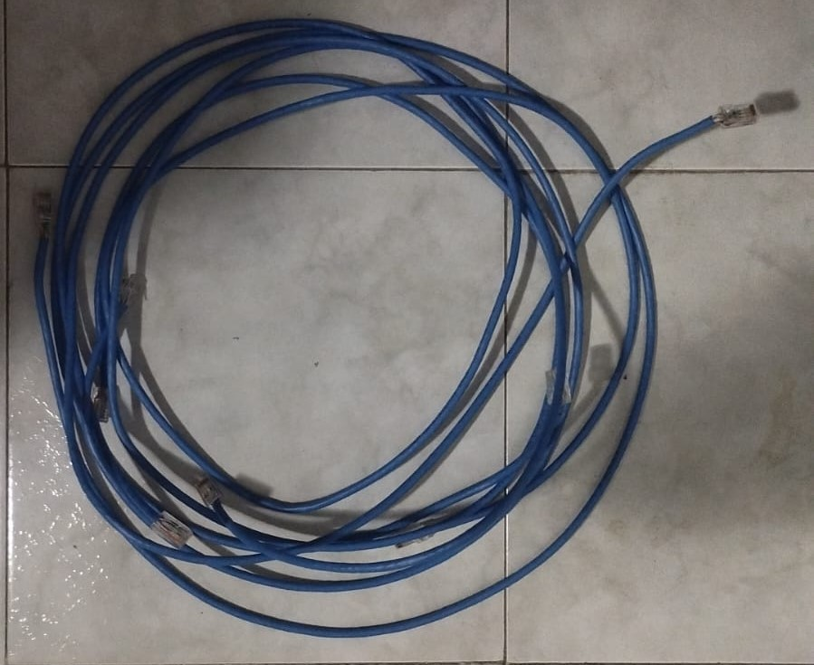

Los cables de red son una parte fundamental para la comunicacion alambrica entre dispositivos, con ellos podemos configurar desde redes locales y basicas hasta arquitecturas de red complejas de muchos dispositivos
Y por lo tanto es importante que su configuracion y armado sea correcto para cumplir su proposito, por lo que en esta practica se llevo a cabo el armado y pruebas de cables de red directos y cruzados.
- Introducción -
Los cables de red directos se utilizan comúnmente para conectar dispositivos que tienen diferentes funciones en una red, como una computadora a un switch o a un router. En estos cables, los pines en un extremo del conector están conectados directamente a los mismos pines en el otro extremo, lo que permite una comunicación eficiente entre los dispositivos.
Por otro lado, los cables de red cruzados se emplean cuando se conectan dispositivos similares entre sí, como dos computadoras o dos switches. En estos cables, los pines en un extremo del conector están intercambiados con los pines correspondientes en el otro extremo, permitiendo que los dispositivos se comuniquen adecuadamente.
El proceso de armado de estos cables implica seguir un estándar de codificación de colores, como el estándar TIA/EIA-568, para asegurar una conexión adecuada y confiable. Esto implica la correcta disposición de los pares de cables dentro del conector RJ-45 y su posterior crimpado utilizando una herramienta adecuada.
- Materiales -
Cable de red para armar
Cabezales de ethernet
Pinza ponchadora de cable de red
- Desarrollo -
Basandonos en la configuracion que debe de tener un cable cruzado y directo, se llevo cortaron secciones de 2 metros para cable y se procedio a conectarlos y probarlos.

Simulación
Para esta practica no fue necesario realizar simulaciones.
Diseño
Para esta practica no fue necesario plantear un diseño, solo seguir los diagramas de
conexiones y hacer las pruebas pertinentes
- Resultados -
Cables Directos


Para comprobar el funcionamiento conectamos una computadora a un punto de conexion del laboratorio para comprobar la coneccion mediante Ethernet.
Cables Cruzados


Para probar el funcionamiento del cable cruzado conectamos dos computadoras por el puerto de ethernet y debemos de obtener el mensaje de "Red no identificada"

Se comprobo el funcionamiento de los 4 cables con los mensajes correspondientes listos para usarse en futuras practicas.
- Conclusiones -
La actividad resalto la importancia y la dificultad de concetar correctamente las 8 termianles de los cables de red para lograr una comunicacion efectiva entre dispositivos.
- Referencias -
- M. Reyes, Comunicaciones digitales, 1.ª ed. Universidad Autónoma Metropolitana, 2017. [En línea]. Disponible en: https://casadelibrosabiertos.uam.mx/gpd-comunicaciones-digitales.html